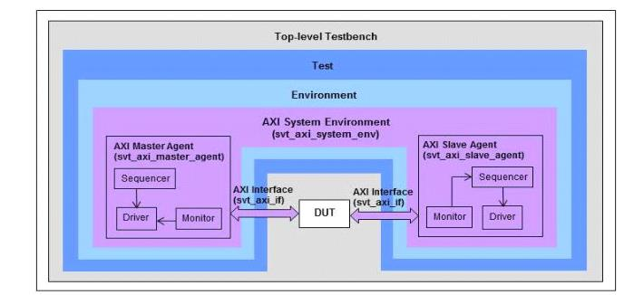

The AXI system environment (svt_axi_system_env) is the top-level component provided by the VIP. This environment encapsulates all of the VIP components and implicitly constructs the required number of AXI master and AXI slave agents as specified by its system configuration object. You can instantiate and construct the AXI system environment in the top-level environment of your UVM testbench.
Figure 2‑1 Top-level Architecture of an AXI VIP Testbench
Figure 2‑1 is a top-level architecture of a simple VC VIP for AXI testbench. The steps for integrating the VIP into a UVM testbench are described in the following sections:
The code snippets presented in this chapter are generic and can be applied to any UVM compliant testbench. For more information on the code usage, refer to the following example: